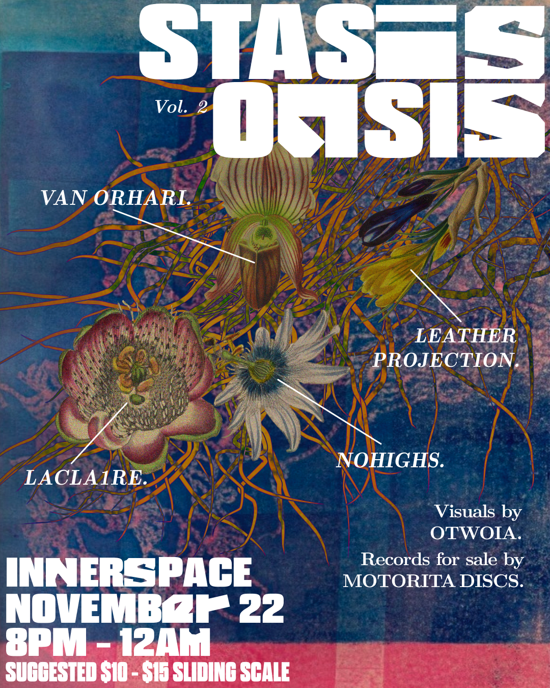

Graphic Design
Freelance work

Show Flyer for Stasis Oasis Vol. 2
Featured on:
Resident Advisor (RA Pick)
Stasis Oasis on Instagram
Stasis Oasis is an ambient show in Atlanta, GA. The idea behind the show is to act as an ‘oasis’ of sound amongst all the amazing-but-physically-exhausting raves in ATL.
The visual theme of Vol. 2 is ecology. Swamps, microorganisms, cyborg frogs. Whereas Vol. 1 referenced vaporwave, Vol. 2 is more like Area X in the movie Annihilation (the St. Mark’s Wildlife Refuge in Florida).